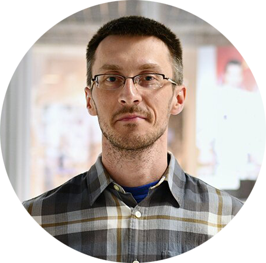

|  |
Павел Каравацкий
Переводчик, научный сотрудник музея.
КОНТАКТЫ
Старший научный сотрудник Мемориального музея космонавтики, занимаюсь экспозиционной и выставочной деятельностью.
Выполняю переводы научных текстов, деловой, экономический и технический переводы.
Принимаю решения в короткие сроки, умею работать в коллективе, пунктуален, стрессоустойчив, оптимистичен, коммуникабелен.
Люблю заниматься просветительской деятельностью в областях астрономии, мировой космонавтики, умею читать лекции, проводить экскурсионные занятия, заинтересовывать и удерживать внимание больших групп слушателей.
Занимаюсь самостоятельным изучением веб-разработки с помощью как бесплатных, так и платных ресурсов (Web Development с использованием HTML, CSS, JavaScript, React).
Увлекаюсь любительской астрономией (астрофотография и визуальные астрономические наблюдения с использованием личного астрономического оборудования).
С примерами моих работ по астрофотографии можно познакомиться, пройдя по ссылке.
|